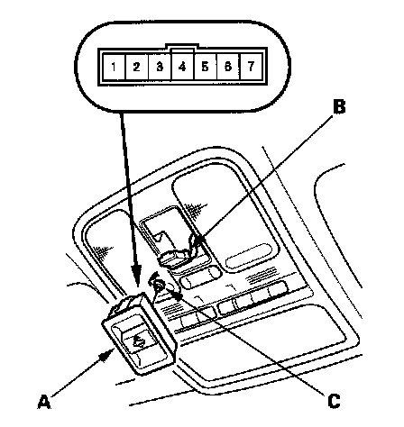
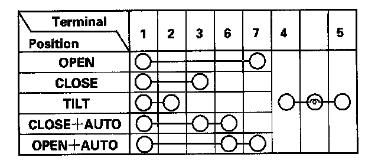

Sunroof / Moonroof Switch: Service and Repair
Moonroof Switch Test/ReplacementSpecial Tools Required
KTC trim tool set SOJATP2014
NOTE:
- Use the appropriate tool from the KTC trim tool set to avoid damaging components.
- Take care not to scratch the roof console and related parts.
- The moonroof can still be operated for about 10 minutes after the ignition switch is turned from the "II" to the "I" or "0" positions, as long as none of the doors have been opened. This provides a convenience to parked occupants while offering a degree of security against unwanted or accidental moonroof operation.

1. Carefully pry the moonroof switch (A) out of the roof console.
2. Disconnect the 7P connector (B) from the moonroof switch.

3. Check for continuity between the terminals in each switch position according to the table.
4. If the continuity is not as specified, replace the illumination bulb (C) or the switch.
5. Install in the reverse order of removal.